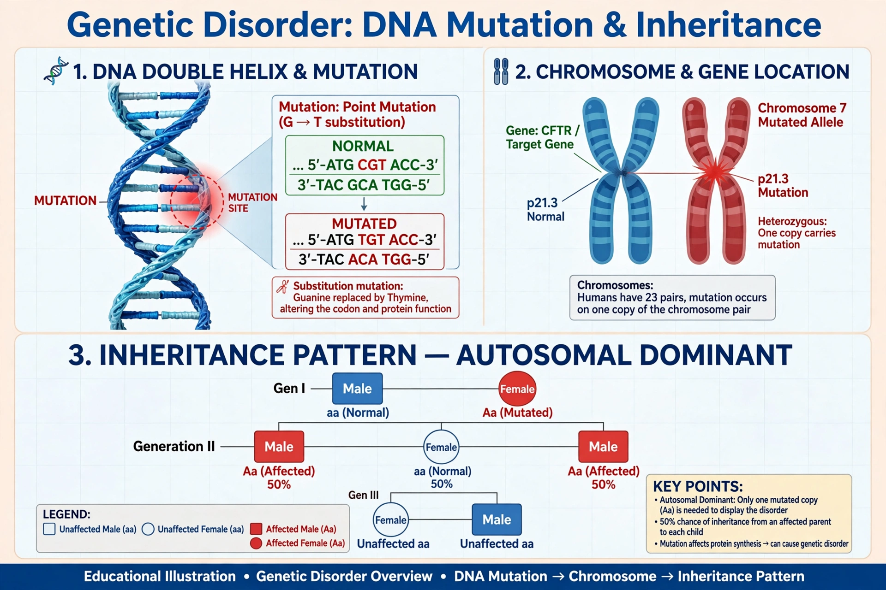

A genetic disorder is a health problem caused by one or more abnormalities in the genome. It can be caused by a mutation in a single gene (monogenic), by mutations in multiple genes (multifactorial), by a combination of gene mutations and environmental factors, or by damage to chromosomes.

Genetic disorderSingle-gene disorders include cystic fibrosis, sickle cell disease, Huntington disease and haemophilia. Inheritance may be autosomal dominant, autosomal recessive, X-linked, Y-linked or mitochondrial. Chromosomal disorders such as Down syndrome arise from an extra, missing or rearranged chromosome.
Diagnosis uses family history, examination, biochemical tests, karyotyping and DNA sequencing. Genetic counselling helps families understand risks. Treatment is often supportive, though enzyme replacement, dietary management and, increasingly, gene therapy can address specific causes. See also Cardiovascular disease and Immune system.
Collectively genetic disorders are common, although individual conditions may be rare. Newborn screening programmes detect several treatable disorders soon after birth.